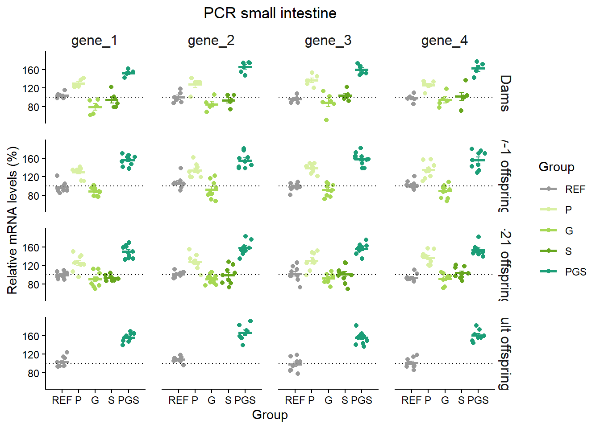
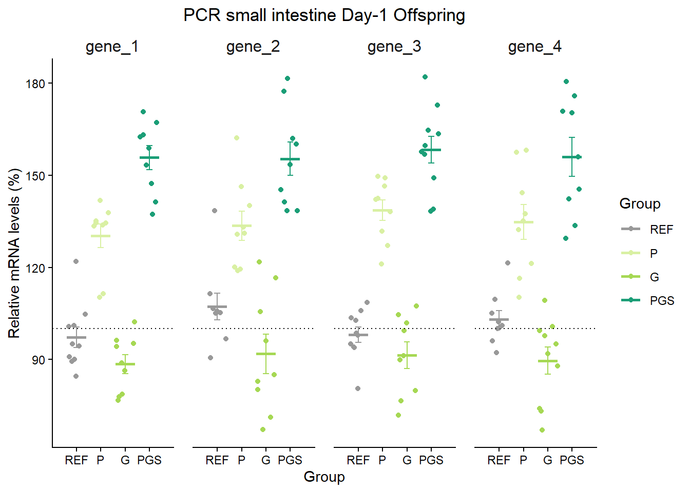

setwd("C:/pathway que ha de seguir per arribar a la carpeta d'interés")Rstudio Scripts
Rstudio basics
Bon dia i benvinguts al codi més interessant per a nosaltres en Rstudio. He creat aquesta web per compartir els meus coneixements adquirits al respecte i per anar-la actualitzant a mesura que n’apregui més. M’agradaria comentar que no s’ha fet desde la perfecció lingüística, sinó desde la rapidesa. Espero que no m’ho tingueu en compte.
Tant de bo us sigui útil, Elsa.
Recomanacions inicials
Si sou com jo i vau aprendre R abans de que existís la intel·ligència artificial, probablement ho recordareu amb por, però això ja no és així.
Per començar recomano sempre tenir una idea de què necessites i vols fer. Seguidament buscar a internet alguna persona que ho expliqui, ja sigui una web o un video i seguir les seves instruccions. Finalment, anar provant el codi amb les teves dades i quan trobis algun error, o vulguis canviar alguna característica, explicar-li a alguna intel·ligència artificial que tens, on vols arribar i quins problemes t’estàs trobant.
No recomano (de moment) anar directament a la intel·ligència artificial.
Us deixo algunes webs que a mi em van anar bé quan vaig tornar aprendre de veritat a treballar amb Rstudio:
Cursos de Rstudio: https://education.rstudio.com/learn/beginner/
Estadística: https://learningstatisticswithr.com/book/
I alguns que encara no he mirat però poden ser interessants
- R for data science: https://r4ds.hadley.nz/
- Ggplot: https://ggplot2-book.org/
- Graph cookbook: https://r-graphics.org/index.html
- Data visualization: https://socviz.co/
Bàsics
Instal·lació
Per començar ens haurem de descarregar:
Un cop ho tingueu instal·lat ja podem començar.
Zona de treball
Tenim dues maneres de treballar, creant un projecte o agafant una carpeta qualsevol i treballant en un directori de treball.
La més senzilla és creant un directori de treball (working directory). Allà hem de tenir el nostre document .csv o .xlsx amb les dades. També serà la carpeta on ens guardarà imatges o documents en cas que ho demanem mitjançant codi.
Es pot indicar de la següent manera:

També es pot indicar mitjançant codi (jo ho prefereixo):
Per altre banda es pot crear un projecte (millor si ho vols tenir tot més organitzat):

En aquest cas pots crear diferents carpetes a dins del projecte directament desde la finestra de “Files” a l’extrem dret inferior. Recomano crear-ne tres mínim anomenats:
“data”: col·locar el fitxer amb les dades
“scripts”: on guardaràs els scripts
“output”: on gruardar els gràfics
En el cas que feu análisis en més d’un dataset, recomano crear carpetes per a cada un, per exemple “PCR” i dins d’aquesta les tres que acabo de dir.
Script
L’script son les instruccions que aniràs escrivint. Alguns trucs que he anat descobrint són…
Si escrius una “ordre”, apareix en negre i s’executarà al tenir en cursor a la línia (o seleccionar-ne una o varies) i posar Run. Una altre manera que a mi m’agrada més és amb el teclat: Ctrl + Enter
View(data) Per posar un comentari poses un # i tot el que estigui darrere no s’executarà
#en aquest cas no s'executarà res
View(data) #en aquest altre cas executarà la ordre i tindràs el comentari
#View(data) aquest cas és incorrecte si vols executar l'ordre ja que no ho faràUna altre característica xula és que a dins l’script pots anar creant un índex, que apareix a l’outline. Per activar-ho simplement has de colocar mínim 4 ---- al final del comentari. Al posar diferent número de # crearas diferent subnivells.
Això també fa que aparegui una pestanyeta a l’esquerra del títol i permetrà amagar tota aquella secció, fent la revisió i lectura de l’script sencer més còmode.
#Títol 1 ----
## Subtítol----
### Sub-subtítol ----
#### encara més subtitol ----
#Títol 2 ----
Instal·lar i carregar paquets
R té funcions bàsiques, però per fer-te la vida més fàcil molta gent ha creat funcions que et pots descarregar en paquets. El primer cop que l’utilitzis has d’instal·lar-lo i carregar-lo i els següents només carregar-lo.
install.packages("nom paquet")
library(nom paquet)Els que jo sempre utilitzo són:
library(tidyverse) #conté 9 paquets d'edició i visualització
library(here) #al treballar en un projecte
library(readxl) #per importar dades que estan en un fitxer d'excel
library(janitor) #ajudar a netejar les dades
library(skimr) #per obtenir un resum de les dades complert
library(broom) #poder fer servir funcions com tidy
library(rstatix) #funcions d'estadísticaImportar dades
Amb la zona de treball preparada i els paquets instal·lats i carregats ja podem començar a treballar, i el primer serà importar les dades.
Desde un working directory:
raw_data<- read_excel("nom excel.xlsx", sheet = "nom full")En un projecte amb el paquet library(here):
raw_data <- read_excel(here("data", "nom excel.xlsx"), sheet = "nom full")
#en el cas de estar en una subcarpeta
raw_data <- read_excel(here("nom subcarpeta", "data", "nom excel.xlsx"), sheet = "nom full")Seguidament comprovem que s’han importat bé.
View(raw_data) #Mirar tota la taula
head(raw_data) #imprimeix només el principi de les dades
skim(raw_data) #obtenir estadístics descriptius i característiques de les variablesSi tot està correcte ja podem començar amb el que vulguem.
Descarregar dades i figures
Abans de passar a l’anàlisi de dades us indico com descarregar-vos arxius que hagueu generat:
- Dataframes
library(writexl)
write_xlsx(nom_dataframe, "nom fitxer.xlsx") #amb working directory
write_xlsx(nom_dataframe, here("data", "nom fitxer.csv")) #amb projecte- Figures amb
ggplot(paquet inclós dins de tidyverse )
ggsave(here("output","nom fitxer.png"), width = 12, height = 3, dpi = 300)
#pots canviar la mida i la resolució (dpi)Altres bàsics
Finalment, escriuré funcions molt bàsiques que segurament ja conegueu però per tenir-les recollides.
R és una calculadora amb memòria per tant es poden fer operacions bàsiques, suma, resta…
Generar objectes obj <- x (Shortcut per a posar <-: alt + -)
Definir vectors vec <- c(x, y, z)
Definir matrius mat <- matrix(data=c(x, y, z), nrow=X, ncol=Y)
Accedir a elements del dataframe:
Columna pel nom
data$nomcolumnaElement per coordenades
data[fila, columna]Rang dades
data[x:y,] #(buit=tot)
Funcions interessants primera vista a les dades (i comprovar que tot bé)
dim(data) , str(data) , glimpse(data) , head(data) / tail(data) , View(data) , glimpse(data)
Netejar dades Netejar dades: canviar tots els caràcters dels noms de les columnes
data <- select_all(data, tolower/toupper)
data <- rename(data, newname=oldname)
Reordenar columnes o triar quines vols en un nou dataframe
select(data, col1, col2, col3, everything())
En el cas de resultats obtinguts, per exemple result.test, la majoria són elements tipus llista.
Accedir element concret:
Nomllista$nomobjecte (result.test$p.value)Veure tots elements
str(nomllista)
Separa o ajuntar columnes (i mantenir inicial): separate /unite (remove=F)
Canviar o afegir columnes amb operacions mutate
… entre moltes d’altres que ja aniré explicant.
Programació en R
Realment R és un llenguatge de programació, per tant es poden fer altres coses molt interessants com loops. Aquí ja no entraré però si estàs interessat que sàpiques que existeixen i a vegades el ChatGPT en crea, per tant que els sàpigues interpretar si t’apareixen.
#Loops
while ( CONDITION ) {
STATEMENT1
STATEMENT2
ETC
} #mentre la condició es compleixi anirà fent el que tingui a dins i repetirà fins que es deixi de complir
for ( VAR in VECTOR ) {
STATEMENT1
STATEMENT2
ETC
} #nombre finit, per cada variable al vector farà el que li demanis fins que acabi amb totes.
if ( CONDITION ) { #si aquesta condició es compleix farà els statement 1 i 2
STATEMENT1
STATEMENT2
ETC
} else { #si no es compleix l'altre fer aquesta
STATEMENT3
STATEMENT4
ETC
}
FNAME <- function ( ARG1, ARG2, ETC ) { #funcions
STATEMENT1
STATEMENT2
ETC
return( VALUE )
}Anàlisi de dades
Perfecte, doncs ara que ja sabem què és un script i com carregar dades començarem a tractar-les.
El meu tip és que tot i que per a fer un anàlisi no necessitis certes variables, tu les col·loquis totes al teu full de càlcul. En el meu cas jo estic treballant amb rates que reben una dieta materna i treballo tant amb les mares com amb la descendència. Per tant faré les següents columnes sempre:
rat: identificador de la rata
generation: a quina generació pertanyen (“M”, “Cd1”, “Cd21”, “CA”)
sex: el sexe de la rata (“M”, “F”, “ns”)
group: a quin grup de dieta pertanyen (“REF”, “P”, “G”, “S”, “PGS”)
variables d’interés: columnes diferents amb títol de cada variable i els valors que ha obtingut cada rata.
PCR: una columna per cada gen
Lipidòmica: una columna per cada lípid
Beads: una columna per cada Ig
i un llarg etcètera
Si un dia jo només tinc rates que son de la generació “M”, igualment fer una columna i indicar-ho, ja que un cop a dins de R, podem treure columnes si no ens interessen, o ajuntar dos datasets diferents on llavors potser sí que és interessant tenir aquesta informació.
El que si que no recomano és tenir dues columnes amb la mateixa informació, com per exemple una columna on el grup estigui codificat amb lletres i una altre amb números. Si en algun moment ho necessitem, simplement mutarem la columna existent i ja està.
Una altre recomanació és fer els noms de columnes, i les variables a dins seu, el més simple possible. Això és degut a que després, quan creem el codi, segurament ho haurem d’escriure EXACTAMENT igual, per tant com més simple menys maldecaps. Si esteu fent servir algun dataset que no teniu preparat per això no us preocupeu, hi ha maneres de fer-lo més simple dins d’R.
grup enlloc de Grup
M enlloc de Mascles
A més a més el meu dataset és complicat ja que no tinc el mateix nombre de grups per cada generació. Aquí teniu una taula resum que serà útil per entendre els anàlisis estadístics posteriors.
| Generació | Grups | Sexe | Rates per grup |
|---|---|---|---|
| M | REF, P, G, S, PGS | F | 6 |
| Cd1 | REF, P, G, PGS | M, F | 10 |
| Cd21 | REF, P, G, S, PGS | M, F | 10 |
| CA | REF, PGS | M, F | 10 |
Per a que no hi hagi problemes de filtració de dades li he demanat a ChatGPT que em crei un dataset d’aquestes característiques, així que totes les dades que faré servir i els resultats són inventats.
Això si, jo ja he fet un pre-processat de les dades amb l’excel en el que he tret els outliers de cada grup (per tant alguna cel·la estarà buida i tindré NA) i els valors que introdueixo són expressió relativa respecte el grup REF de la seva generació, en %. Si no ho teniu fet es podria fer tot dins de l’R però jo per començar no m’he complicat tant.
L’excel llueix així:

Importem les dades i comprovem que estan bé i els grups que existeixen corresponen al que hem indicat:
library(readxl)
library(here)
raw_data <- read_excel(here("Basic", "data", "PCR.xlsx"), sheet = "relative")
View(raw_data)
library(skimr)
skim(raw_data)| Name | raw_data |
| Number of rows | 140 |
| Number of columns | 8 |
| _______________________ | |
| Column type frequency: | |
| character | 4 |
| numeric | 4 |
| ________________________ | |
| Group variables | None |
Variable type: character
| skim_variable | n_missing | complete_rate | min | max | empty | n_unique | whitespace |
|---|---|---|---|---|---|---|---|
| generation | 0 | 1 | 1 | 4 | 0 | 4 | 0 |
| group | 0 | 1 | 1 | 3 | 0 | 5 | 0 |
| sex | 0 | 1 | 1 | 1 | 0 | 2 | 0 |
| rat | 0 | 1 | 2 | 5 | 0 | 122 | 0 |
Variable type: numeric
| skim_variable | n_missing | complete_rate | mean | sd | p0 | p25 | p50 | p75 | p100 | hist |
|---|---|---|---|---|---|---|---|---|---|---|
| gene_1 | 13 | 0.91 | 115.60 | 28.32 | 61.3 | 93.70 | 106.7 | 139.25 | 170.7 | ▂▇▃▃▃ |
| gene_2 | 13 | 0.91 | 119.72 | 30.46 | 67.2 | 97.00 | 111.4 | 141.20 | 192.4 | ▅▇▅▃▂ |
| gene_3 | 10 | 0.93 | 119.48 | 29.84 | 50.7 | 97.30 | 109.0 | 146.48 | 182.1 | ▁▇▅▅▃ |
| gene_4 | 13 | 0.91 | 119.15 | 29.24 | 67.0 | 96.05 | 110.2 | 143.40 | 182.6 | ▂▇▃▅▂ |
Com veiem, ens ha fet un resum general de les dades i variables, totes com a conjunt.
Anem a teure’ls-hi suc.
Transformar el dataset
Tidyverse
Per tal de fer-nos la vida més fàcil, altre gent que treballa amb R ha creat el paquet tidyverse el qual, com ja he dit, conté els paquets més importants per a transformar dades i graficar-les. També hi ha gent molt generosa que ha fet CheatSheets dels paquets més útils, que us recomano imprimir i tenir sempre a mà: https://posit.co/resources/cheatsheets/
library(tidyverse) ── Attaching core tidyverse packages ──────────────────────── tidyverse 2.0.0 ──
✔ dplyr 1.1.4 ✔ readr 2.1.5
✔ forcats 1.0.1 ✔ stringr 1.5.2
✔ ggplot2 4.0.0 ✔ tibble 3.3.0
✔ lubridate 1.9.4 ✔ tidyr 1.3.1
✔ purrr 1.1.0
── Conflicts ────────────────────────────────────────── tidyverse_conflicts() ──
✖ dplyr::filter() masks stats::filter()
✖ dplyr::lag() masks stats::lag()
ℹ Use the conflicted package (<http://conflicted.r-lib.org/>) to force all conflicts to become errorslibrary(janitor)
S'està adjuntant el paquet: 'janitor'
Els següents objectes estan emmascarats des de 'package:stats':
chisq.test, fisher.testlibrary(broom)
library(rstatix)
S'està adjuntant el paquet: 'rstatix'
L'objecte següent està emmascarat per 'package:janitor':
make_clean_names
L'objecte següent està emmascarat per 'package:stats':
filterUna de les característiques més interessants és la pipeline %>% (o ara més nou de R |> ). Aquesta funció del paquet dyplr permet enllaçar moltes accions i que vagin succeint de manera seqüencial en un dataframe.
Primer s’indica el dataframe i després comeces a fer accions. Per tant dins d’aquestes accions ja no cal que indiquis quin dataset ha d’agafar.
Per altra banda pots fer certes accions a partir de condicions que es troben en un altre dataset (ja ho veurem més endavant).
Crear nous dataset
El següent pas un cop hem importat el dataset és determinar quin tipus de variable és cada una, i a mi m’agrada crear un nou dataset amb les modificacions i deixar el raw_data intacte per si en algun moment necessitem alguna dada o fem modificacions irreversibles sense voler no haver de tornar a importar.
Si volem grardar el nou dataset és important posar davant de l’acció data nom_dataset <- d’aquesta manera crearem un dataset amb el nom que triem amb les accions que hem indicat.
data <- raw_data %>% #farà les accions sobre el dataset anomenat raw_data
mutate(across(c(group, sex, rat, generation), as.factor)) #definir totes les variables que son factors
skim(data)| Name | data |
| Number of rows | 140 |
| Number of columns | 8 |
| _______________________ | |
| Column type frequency: | |
| factor | 4 |
| numeric | 4 |
| ________________________ | |
| Group variables | None |
Variable type: factor
| skim_variable | n_missing | complete_rate | ordered | n_unique | top_counts |
|---|---|---|---|---|---|
| generation | 0 | 1 | FALSE | 4 | Cd2: 50, Cd1: 40, M: 30, CA: 20 |
| group | 0 | 1 | FALSE | 5 | PGS: 36, REF: 36, G: 26, P: 26 |
| sex | 0 | 1 | FALSE | 2 | F: 85, M: 55 |
| rat | 0 | 1 | FALSE | 122 | G1.: 2, G3.: 2, G8.: 2, P2.: 2 |
Variable type: numeric
| skim_variable | n_missing | complete_rate | mean | sd | p0 | p25 | p50 | p75 | p100 | hist |
|---|---|---|---|---|---|---|---|---|---|---|
| gene_1 | 13 | 0.91 | 115.60 | 28.32 | 61.3 | 93.70 | 106.7 | 139.25 | 170.7 | ▂▇▃▃▃ |
| gene_2 | 13 | 0.91 | 119.72 | 30.46 | 67.2 | 97.00 | 111.4 | 141.20 | 192.4 | ▅▇▅▃▂ |
| gene_3 | 10 | 0.93 | 119.48 | 29.84 | 50.7 | 97.30 | 109.0 | 146.48 | 182.1 | ▁▇▅▅▃ |
| gene_4 | 13 | 0.91 | 119.15 | 29.24 | 67.0 | 96.05 | 110.2 | 143.40 | 182.6 | ▂▇▃▅▂ |
Si tenim noms molt complicats, podem afegir abansclean_names() i posa tots els noms de columna en minuscula i sense espais, per fer més fàcil el codi, necessita paquet janitor
Si us hi fixeu ara les variables que eren de categoria character per defecte, ara son factor i ja es veuen els nivells.
Filtrar dades
Si per exemple volem extreure només les dades de la generació “M” podriem crear un altre dataset de la següent manera:
dams <- data %>%
filter(generation == "M")
skim(dams)| Name | dams |
| Number of rows | 30 |
| Number of columns | 8 |
| _______________________ | |
| Column type frequency: | |
| factor | 4 |
| numeric | 4 |
| ________________________ | |
| Group variables | None |
Variable type: factor
| skim_variable | n_missing | complete_rate | ordered | n_unique | top_counts |
|---|---|---|---|---|---|
| generation | 0 | 1 | FALSE | 1 | M: 30, CA: 0, Cd1: 0, Cd2: 0 |
| group | 0 | 1 | FALSE | 5 | G: 6, P: 6, PGS: 6, REF: 6 |
| sex | 0 | 1 | FALSE | 1 | F: 30, M: 0 |
| rat | 0 | 1 | FALSE | 30 | G1: 1, G3: 1, G4: 1, G6: 1 |
Variable type: numeric
| skim_variable | n_missing | complete_rate | mean | sd | p0 | p25 | p50 | p75 | p100 | hist |
|---|---|---|---|---|---|---|---|---|---|---|
| gene_1 | 3 | 0.90 | 110.77 | 28.24 | 61.3 | 94.15 | 105.0 | 130.55 | 161.7 | ▃▇▂▅▅ |
| gene_2 | 3 | 0.90 | 115.63 | 32.90 | 67.8 | 89.60 | 105.2 | 137.10 | 175.5 | ▅▇▁▃▃ |
| gene_3 | 2 | 0.93 | 118.07 | 30.69 | 50.7 | 94.45 | 110.8 | 145.80 | 173.7 | ▁▇▆▅▅ |
| gene_4 | 3 | 0.90 | 116.40 | 28.53 | 71.2 | 96.40 | 108.8 | 134.15 | 177.1 | ▃▇▅▂▃ |
La funció filter() és molt interessant ja que podem fer-ho de una variable només un nivell amb == "nom variable" o de diferents nivells %in%c("nom1", "nom2") i alhora de diferents variables i diferents nivells
data %>%
filter(generation %in% c("M", "CA"), group == "REF" ) # A tibble: 16 × 8
generation group sex rat gene_1 gene_2 gene_3 gene_4
<fct> <fct> <fct> <fct> <dbl> <dbl> <dbl> <dbl>
1 M REF F R1 105 94 95.2 101
2 M REF F R2 98.6 118. 98.1 110.
3 M REF F R6 106. 99.9 88.9 NA
4 M REF F R8 115. 89.4 88 96.7
5 M REF F R9 97.7 108. 108. 96.1
6 M REF F R10 97.7 87.8 NA 85.4
7 CA REF F R1.2 93.8 108. 94.4 101.
8 CA REF F R1.3 94.4 105. 119. 93.2
9 CA REF F R1.6 93.6 NA 85.5 108.
10 CA REF F R2.6 112. 112. 78 NA
11 CA REF F R2.7 114. 114. 104. 95.5
12 CA REF M R6.6 NA 118. 84.8 114.
13 CA REF M R6.7 103. 106. NA 93.2
14 CA REF M R8.2 125. 96.4 104. 118
15 CA REF M R8.3 93.6 106. 116. 99.6
16 CA REF M R8.6 94.7 111. 99.3 85.7Fixeu-vos que en aquest cas m’ho ensenya directament. Això és degut a que no m’ho està guardant com a dataframe perquè no he posat nom_dataset <- davant de les dades. Pot ser útil per comprovar si el teu codi fa el que vols abans de crear el dataframe.
Wide format vs Long format
Un concepte molt important a l’hora de utilitzar R és el wide dataset vs long dataset.

En aquesta imatge tenim a l’esquerra el format wide, que és el que estem més acostumats a crear en excel, i a la dreta el format long, el qual és el que li va millor a R per la majoria de funcions. En el nostre cas li hem donat una taula en format wide ja que tenim una rata a cada fila, i tenim una columna per a cada variable de gen. Per a tenir-ho en format long volem una columna que ens digui de quin gen es tracta aquella observació i una altre columna amb el valor de la observació.
Es pot fer fàcilment amb la següent formula, i aprofitem per recordar les variables que son factors i indicar l’ordre en que volem que apareguin a posteriori:
longdata <- data %>%
pivot_longer(cols="gene_1":"gene_4", names_to="gene", values_to = "value" ) %>%
mutate(
group = factor(group,
levels = c("REF", "P", "G", "S", "PGS")),
generation = factor(generation,
levels = c( "M", "Cd1", "Cd21", "CA")),
gene = factor(gene,
levels = c("gene_1", "gene_2", "gene_3", "gene_4"))
)
head(longdata) #per visualitzar-ho# A tibble: 6 × 6
generation group sex rat gene value
<fct> <fct> <fct> <fct> <fct> <dbl>
1 M REF F R1 gene_1 105
2 M REF F R1 gene_2 94
3 M REF F R1 gene_3 95.2
4 M REF F R1 gene_4 101
5 M REF F R2 gene_1 98.6
6 M REF F R2 gene_2 118. cols="gene_1":"gene_4"ens indica quines són les columnes que contenen la variable a convertirnames_to="gene"el nom que tindrà la nova columna que indiqui quina variable ésvalues_to = "value"el nom que tindrà la columna amb els valors de la variable
En el cas que a les dades els grups o el sexe els tinguis com a número enlloc de lletres, pots canviar-ho de la següent manera
mutate(
sex = factor(sex,
levels = c("0", "1"), #com està ara
labels = c("Male", "Female")) # a què correspon cada unRecomano guardar les dades en format long per si les necessites ja que si ho fessis a ma tindries feina…
library(writexl)
write_xlsx(longdata,here("output", "PCR_long.xlsx"))De la mateixa manera que ara hem convertit de wide a long, en el cas de tenir un dataframe en format long i que el vulguem llegir de manera més fàcil, podem passar de long a wide.
widedata <- longdata %>%
pivot_wider(names_from="gene", values_from="value")
head(widedata)# A tibble: 6 × 8
generation group sex rat gene_1 gene_2 gene_3 gene_4
<fct> <fct> <fct> <fct> <dbl> <dbl> <dbl> <dbl>
1 M REF F R1 105 94 95.2 101
2 M REF F R2 98.6 118. 98.1 110.
3 M REF F R6 106. 99.9 88.9 NA
4 M REF F R8 115. 89.4 88 96.7
5 M REF F R9 97.7 108. 108. 96.1
6 M REF F R10 97.7 87.8 NA 85.4names_from="gene"per a saber d’on treurà els noms de les noves columnes que crearàvalues_from="value"d’on treurà els valors de cada cel·la
Problema dels NA
És molt important saber en quin format tenim les dades ja que R no treballa bé amb els valors que no existeixen (NA). Com us he comentat, jo ja he fet un pre-processat de les dades, per tant he eliminat els outliers i aquelles cel·les estan buides. Al fer skim veiem a n_missing si en les nostres variables tenim alguns NA .
Per a fer els càlculs, a R podem fer la funció na.omit() . El que fa és eliminar tota la fila en la que es trobi un NA , i per tant podrà fer els càlculs simplement sense aquella fila.
PROBLEMA: en format wide, al eliminar una observació, elimines totes les observacions de tots els gens. Per tant si no tens el valor d’un gen però si de tots els altres, els elimines tots i perds dades.
En canvi, si ho fas en format long, com que cada observació només és d’un gen i el seu valor, sí que et quedes amb la resta de gens, per tant perds menys informació.
Per això recomano sempre que es faci estadística fer-ho amb el format LONG de les dades.
summary(data) #dades originals generation group sex rat gene_1 gene_2
CA :20 G :26 F:85 G1.1 : 2 Min. : 61.3 Min. : 67.2
Cd1 :40 P :26 M:55 G3.1 : 2 1st Qu.: 93.7 1st Qu.: 97.0
Cd21:50 PGS:36 G8.1 : 2 Median :106.7 Median :111.4
M :30 REF:36 P2.1 : 2 Mean :115.6 Mean :119.7
S :16 P3.1 : 2 3rd Qu.:139.2 3rd Qu.:141.2
P4.1 : 2 Max. :170.7 Max. :192.4
(Other):128 NA's :13 NA's :13
gene_3 gene_4
Min. : 50.7 Min. : 67.00
1st Qu.: 97.3 1st Qu.: 96.05
Median :109.0 Median :110.20
Mean :119.5 Mean :119.15
3rd Qu.:146.5 3rd Qu.:143.40
Max. :182.1 Max. :182.60
NA's :10 NA's :13 longdata %>%
na.omit() %>%
pivot_wider(names_from="gene", values_from="value") %>% #per comparar quantes elimina i per tant amb que fariem els anàlisis
summary() generation group sex rat gene_1 gene_2
M :30 REF:36 F:85 G1.1 : 2 Min. : 61.3 Min. : 67.2
Cd1 :40 P :26 M:55 G3.1 : 2 1st Qu.: 93.7 1st Qu.: 97.0
Cd21:50 G :26 G8.1 : 2 Median :106.7 Median :111.4
CA :20 S :16 P2.1 : 2 Mean :115.6 Mean :119.7
PGS:36 P3.1 : 2 3rd Qu.:139.2 3rd Qu.:141.2
P4.1 : 2 Max. :170.7 Max. :192.4
(Other):128 NA's :13 NA's :13
gene_3 gene_4
Min. : 50.7 Min. : 67.00
1st Qu.: 97.3 1st Qu.: 96.05
Median :109.0 Median :110.20
Mean :119.5 Mean :119.15
3rd Qu.:146.5 3rd Qu.:143.40
Max. :182.1 Max. :182.60
NA's :10 NA's :13 widedata %>%
na.omit() %>%
summary() generation group sex rat gene_1 gene_2
M :19 REF:28 F:58 G1.1 : 2 Min. : 64.1 Min. : 67.2
Cd1 :29 P :17 M:39 G3.1 : 2 1st Qu.: 94.3 1st Qu.: 97.2
Cd21:36 G :17 P4.1 : 2 Median :105.0 Median :109.8
CA :13 S :11 R1.1 : 2 Mean :115.6 Mean :119.9
PGS:24 R1.2 : 2 3rd Qu.:139.2 3rd Qu.:140.2
R6.1 : 2 Max. :170.7 Max. :183.7
(Other):85
gene_3 gene_4
Min. : 50.7 Min. : 67.0
1st Qu.: 97.9 1st Qu.: 96.1
Median :108.5 Median :106.2
Mean :118.9 Mean :119.1
3rd Qu.:146.4 3rd Qu.:144.3
Max. :181.7 Max. :182.6
Com podeu veure al treballar amb les dades long els resultats són els mateixos que amb les dates originals i no hem eliminat cap rata sencera. Fixeu-vos també com les dades que hem aconseguit a partir de long estan ordenades com jo volia (li he indicat al crear el dataset) i no com R vol (com en el cas de les originals).
Exemple random accions extra
Quan estava re-aprenent-ho tot, em van fer crear un dataset nou amb moltes variables noves i altres canviades, i us ho poso d’exemple perquè sapigueu que aquestes coses es poden fer
cleanbeaches_new <- cleanbeaches %>%
separate(date, c("day", "month", "year"), remove=F) %>%
mutate(logbeachbugs = log(beachbugs)) %>%
mutate(beachbugsdiff = beachbugs - lag(beachbugs)) %>%
mutate(buggier_all = beachbugs > mean(beachbugs, na.rm=T)) %>%
group_by(site)%>%
mutate(buggier_site = beachbugs > mean(beachbugs, na.rm=T))cleanbeaches_new <- cleanbeaches %>%crea un dataset nou a partir de les dades cleanbeaches i aplica les següents accionsseparate(date, c("day", "month", "year"), remove=F) %>%tens una columna que es diudate, separa-la en tres columnes anomenades"day", "month", "year", però no m’eliminis l’originalmutate(logbeachbugs = log(beachbugs)) %>%afegeix una columna nova que es diguilogbeachbugsi contingui les dades de la columna que ja existeix i es diubeachbugsperò aplica la funciólog(x)als seus valors.mutate(beachbugsdiff = beachbugs - lag(beachbugs)) %>%afegeix una columna nova fent la operacióx-lag(x)de les dades de la columna beachbugsmutate(buggier_all = beachbugs > mean(beachbugs, na.rm=T)) %>%afegeix una columna on indiqui si aquella observació és major a la mitjana (i al fer la mitjana no tinguis en compte els NA:na.rm=T)group_by(site)%>% mutate(buggier_site = beachbugs > mean(beachbugs, na.rm=T))per començar el que facis ara agrupa-ho per site i llavors afegeix una columna que em digui si la observació és major a la mitjana només del site.- Al haver fet
group_by()el que es calculi a partir d’ara es calculara en els diferents sites, no a tot el dataset. Per evitar-ho despres s’ha de ferungroup()
- Al haver fet
Estadística descriptiva
La majoria de l’estadística descriptiva ja la mirem amb l’excel, però per comprovar que tot ho estem fent igual, podem demanar una taula amb la mitjana, la sd, l’error, la n i els límits.
total_results <- longdata %>% #longdata!,wide data també es podria, no recomano
group_by(generation, group, gene) %>% #que ho faci tot dins de la mateixa generació i mateix grup i per cada gen
summarise(
across(
where(is.numeric),
list(
n = ~sum(!is.na(.x)),
mean = ~mean(.x, na.rm = TRUE),
sd = ~sd(.x, na.rm = TRUE),
error = ~sd(.x, na.rm = TRUE) / sqrt(sum(!is.na(.x))),
upper = ~mean(.x, na.rm = TRUE) + 2 * sd(.x, na.rm = TRUE),
lower = ~mean(.x, na.rm = TRUE) - 2 * sd(.x, na.rm = TRUE)
),
.names = "{.col}_{.fn}"
)) %>%
as.data.frame() #ensenyar-ho com a dataframe`summarise()` has grouped output by 'generation', 'group'. You can override
using the `.groups` argument.View(total_results)
head(total_results) generation group gene value_n value_mean value_sd value_error value_upper
1 M REF gene_1 6 103.45000 6.919754 2.824978 117.2895
2 M REF gene_2 6 99.63333 11.881863 4.850750 123.3971
3 M REF gene_3 5 95.66000 8.143893 3.642060 111.9478
4 M REF gene_4 5 97.78000 8.799261 3.935149 115.3785
5 M P gene_1 5 129.72000 9.279925 4.150108 148.2798
6 M P gene_2 5 128.08000 15.767910 7.051624 159.6158
value_lower
1 89.61049
2 75.86961
3 79.37221
4 80.18148
5 111.16015
6 96.54418Al tenir activat na.rm=TRUE s’eliminen els NA del que estàs calculant.
Inferència estadística
Per a saber millor el perquè i què fa cada test, recomano consultar el llibre https://learningstatisticswithr.com/book/. Si ho voleu com algo rutinari, aquí teniu la taula del protocol que va fer la Mariona Camps al 2016 per al SPSS.
| Nº grups | Factors fixos (variables independents) | Segueix la normalitat? | Segueix la homogeneitat de variàncies? | Son dades aparellades? | Test |
|---|---|---|---|---|---|
| 2 | 1 | Si | Si/No | Si/No | T-test |
| No | No | Si | Wilcoxon | ||
| No | U Mann Whitney | ||||
| 1 (mesures repetides) | 1 | No | No | Si | Friedman |
| >2 | 1 | Si | Si | Anova one-way (Posthoc -Bonferroni) | |
| No | Anova one-way (Posthoc -Dunnet T3 (SPSS); Games-Howell (R) | ||||
| No | No | Kruskal Wallis (Posthoc Dunn -Bonferroni correction) | |||
| 2 | Si | Si | Si | Anova two-way mesures repetides | |
| No | No | Si | ? | ||
| Si | Si | No | Anova two-way | ||
| No | No | No | Art ANOVA |
Sigui com sigui sempre hem de començar mirant la normalitat i homogenitat de variàncies de les dades.
Abans de començar a fer gràfics canviarem el “default theme” a classic.
theme_set(theme_classic())També, al demanar-li View(), el separador decimal és en punt, però jo sempre treballo amb l’excel amb comes, per tant per poder-ho copiar directament:
copy <- results_test%>%
mutate(across(where(is.numeric), ~ ifelse(
is.na(.),
"",
format(., decimal.mark = ",", scientific = FALSE))))
View(copy)Normalitat
En el cas que la el número de grups diferents sigui de n<50 s’ha de fer Shapiro-Wilk. En el cas que la n>50, Kolmogorov-Smirnov, el qual no explicaré ja que no l’hem de fer pràcticament mai.
Per a la normalitat primer es comprova amb un QQplot, de manera visual
QQplot <- longdata %>%
group_by(generation, group, gene) %>% #com separaras a l'anàlisi posterior
ggplot(aes(sample = value)) +
stat_qq() +
stat_qq_line() +
facet_grid(generation + group ~ gene, scales = "free") +
theme_minimal() +
labs(title = "QQ plots of value by generation, group and gene",
y = "Sample Quantiles",
x = "Theoretical Quantiles")
QQplot
En el cas de voler només una generació canviar el group_by(generation) per filter(generation == "CA").
Com que no som experts en estadística, nosaltres també farem el test de Shapiro-Wilk per a que ens digui si són normals (p>0.05) o no són normals (p<0.05)
shapiro_by_group <- longdata %>%
group_by(generation, group, gene) %>%
summarise(
# SPSS-style df = size of the sample used
df = sum(!is.na(value)),
# Shapiro–Wilk test (only runs if df ≥ 3, same as SPSS)
W = if(df >= 3) shapiro.test(value)$statistic else NA_real_,
p_value = if(df >= 3) shapiro.test(value)$p.value else NA_real_,
.groups = "drop"
)%>%
mutate( #per afegir columna de * significació, es pot treure
signif = case_when(
is.na(p_value) ~ "ns",
p_value < 0.001 ~ "***",
p_value < 0.01 ~ "**",
p_value < 0.05 ~ "*",
p_value < 0.1 ~ "·",
TRUE ~ "ns"
)) # A R la significació es veu més neta
shapiro_by_group# A tibble: 64 × 7
generation group gene df W p_value signif
<fct> <fct> <fct> <int> <dbl> <dbl> <chr>
1 M REF gene_1 6 0.853 0.165 ns
2 M REF gene_2 6 0.924 0.534 ns
3 M REF gene_3 5 0.915 0.498 ns
4 M REF gene_4 5 0.970 0.876 ns
5 M P gene_1 5 0.738 0.0228 *
6 M P gene_2 5 0.735 0.0215 *
7 M P gene_3 6 0.978 0.941 ns
8 M P gene_4 6 0.856 0.175 ns
9 M G gene_1 5 0.858 0.222 ns
10 M G gene_2 5 0.970 0.876 ns
# ℹ 54 more rows- En aquest cas el gen_1 i gen_2 en alguns grups i algunes generacions no segueixen la normalitat, llavors en el nostre cas decidiriem que aplicariem tests de no normal en tots els casos, però es podria discutir a veure quin aplicar.
Homogeneïtat de les variàncies
Test Levene per a que ens digui si les variàncies són homogènies (p>0.05) o no són homogènies (p<0.05). Es fa per tots els grups en general, no cal separar grups. En el cas de SPSS es feia amb l’Anova, a R el codi seria:
library(car)
levene_long <- longdata %>%
group_by(generation, gene) %>%
group_modify(~ {
# eliminem NA
d <- .x[!is.na(.x$value) & !is.na(.x$group), ]
# --- Levene clàssics ---
lev_mean <- leveneTest(value ~ group, d, center = mean)
lev_median <- leveneTest(value ~ group, d, center = median)
tibble(
method = c("Based on Mean","Based on Median"),
F = c(lev_mean[1, "F value"],lev_median[1, "F value"]),
df1 = c(lev_mean[1, "Df"],lev_median[1, "Df"] ),
df2 = c(lev_mean[2, "Df"],lev_median[2, "Df"]),
p.value = c(lev_mean[1, "Pr(>F)"],lev_median[1, "Pr(>F)"]))
}) %>%
ungroup() %>%
mutate( #per afegir columna de * significació, es pot treure
signif = case_when(
is.na(p.value) ~ "ns",
p.value < 0.001 ~ "***",
p.value < 0.01 ~ "**",
p.value < 0.05 ~ "*",
p.value < 0.1 ~ "·",
TRUE ~ "ns"
)) # A R la significació es veu més neta
levene_long# A tibble: 32 × 8
generation gene method F df1 df2 p.value signif
<fct> <fct> <chr> <dbl> <int> <int> <dbl> <chr>
1 M gene_1 Based on Mean 2.54 4 22 0.0686 ·
2 M gene_1 Based on Median 1.52 4 22 0.232 ns
3 M gene_2 Based on Mean 0.0455 4 22 0.996 ns
4 M gene_2 Based on Median 0.0161 4 22 0.999 ns
5 M gene_3 Based on Mean 0.638 4 23 0.641 ns
6 M gene_3 Based on Median 0.576 4 23 0.683 ns
7 M gene_4 Based on Mean 0.395 4 22 0.810 ns
8 M gene_4 Based on Median 0.330 4 22 0.855 ns
9 Cd1 gene_1 Based on Mean 0.235 3 33 0.871 ns
10 Cd1 gene_1 Based on Median 0.207 3 33 0.891 ns
# ℹ 22 more rows- En aquest cas el gen_1 i gen_2 en alguns grups i algunes generacions les variàncies no son homogenies, llavors en el nostre cas decidiriem que aplicariem tests de no homogènies en tots els casos, però es podria discutir a veure quin aplicar.
Aquí també tenim una diferència respecte a SPSS, ja que levene no permet NA, llavors en el format wide elimina tota la observació. Al treballar en long només eliminem la observació del gen concret per tant mantenim més dades per als altres gens. Si es vol comprovar o fer, previ al test LEVENE fer:
longdata2 <- data %>%
na.omit() %>%
pivot_longer(cols="gene_1":"gene_4", names_to="gene", values_to = "value" ) %>%
mutate(
group = factor(group,
levels = c("REF", "P", "G", "S", "PGS")),
generation = factor(generation,
levels = c( "M", "Cd1", "Cd21", "CA")),
gene = factor(gene,
levels = c("gene_1", "gene_2", "gene_3", "gene_4")))A part SPSS ho feia centrat en la mitjana, mediana (amb R ho fem) i “trimmed mean” i “median and with adjusted df”. Aquestes últimes no les calculem, però no ho crec necessari ja que normalment els resultats son o tots no significatius o tots significatius.
Independent samples T-test
Per a comparacions de mitjanes on hi ha dos grups i les mostres son normals: T-test de mostres independents
results_ttest <- longdata %>%
filter(generation == "CA") %>% #només aquesta té dos grups
group_by(generation, gene) %>%
summarise(
# fer t-test i guardar el resultat
t_res = list(t.test(value ~ group, var.equal = T, alternative = "two.sided", conf.level=0.95)), #canviar a F si equal variances not assumed ; paired = F, es separen les variables amb ,
.groups = "drop"
) %>%
rowwise() %>%
mutate(
t = t_res$statistic,
df = t_res$parameter,
mean_diff = diff(t_res$estimate), # Mean difference (group1 - group2)
std_error = abs(mean_diff) / abs(t), # Std. Error Difference
p_one_sided = t_res$p.value / 2,
p_two_sided = t_res$p.value,
sig = case_when(
is.na(t_res$p.value) ~ "ns",
t_res$p.value < 0.001 ~ "***",
t_res$p.value < 0.01 ~ "**",
t_res$p.value < 0.05 ~ "*",
t_res$p.value < 0.1 ~ "·",
TRUE ~ "ns"), #no cal, per visualitzar-ho millor
conf_low = t_res$conf.int[1],
conf_high = t_res$conf.int[2]
) %>%
select(generation, gene, t, df, p_one_sided, p_two_sided, sig, mean_diff, std_error, conf_low, conf_high)
results_ttest# A tibble: 4 × 11
# Rowwise:
generation gene t df p_one_sided p_two_sided sig mean_diff
<fct> <fct> <dbl> <dbl> <dbl> <dbl> <chr> <dbl>
1 CA gene_1 -10.7 16 0.00000000566 0.0000000113 *** 53.6
2 CA gene_2 -9.83 15 0.0000000312 0.0000000624 *** 58.3
3 CA gene_3 -9.17 17 0.0000000270 0.0000000540 *** 57.4
4 CA gene_4 -10.8 15 0.00000000906 0.0000000181 *** 59.9
# ℹ 3 more variables: std_error <dbl>, conf_low <dbl>, conf_high <dbl>En el cas que la homogeneïtat de variàncies no es compleixi, modificar
var.equal = F.En el cas de dades aparellades afegir
paired = Ti eliminarvar.equalEn el cas que tenir vectors canvia la formula
t.test(value, group). No acostuma a ser el nostre cas, vigilar!!
One-way ANOVA
Quan tenim més de dos grups i les dades són normals i homogènies fem el One-way ANOVA, amb el post-hoc ajustat per Bonferroni.
Aquest codi només mostra el resultat
longdata %>%
filter(generation %in% c("M", "Cd1", "Cd21")) %>%
mutate(gene_name = gene) %>%
group_by(gene) %>%
group_walk(~ {
cat("\n====================\n")
cat("GENE:", unique(.x$gene_name), "\n")
cat("Generation:", unique(.x$generation), "\n")
print(summary(aov(value ~ group, data = .x)))
})
====================
GENE: 1
Generation: 1 2 3
Df Sum Sq Mean Sq F value Pr(>F)
group 4 67709 16927 120.8 <2e-16 ***
Residuals 104 14572 140
---
Signif. codes: 0 '***' 0.001 '**' 0.01 '*' 0.05 '.' 0.1 ' ' 1
11 observations deleted due to missingness
====================
GENE: 2
Generation: 1 2 3
Df Sum Sq Mean Sq F value Pr(>F)
group 4 74249 18562 93.29 <2e-16 ***
Residuals 105 20892 199
---
Signif. codes: 0 '***' 0.001 '**' 0.01 '*' 0.05 '.' 0.1 ' ' 1
10 observations deleted due to missingness
====================
GENE: 3
Generation: 1 2 3
Df Sum Sq Mean Sq F value Pr(>F)
group 4 75457 18864 106.1 <2e-16 ***
Residuals 106 18840 178
---
Signif. codes: 0 '***' 0.001 '**' 0.01 '*' 0.05 '.' 0.1 ' ' 1
9 observations deleted due to missingness
====================
GENE: 4
Generation: 1 2 3
Df Sum Sq Mean Sq F value Pr(>F)
group 4 69539 17385 95.81 <2e-16 ***
Residuals 105 19052 181
---
Signif. codes: 0 '***' 0.001 '**' 0.01 '*' 0.05 '.' 0.1 ' ' 1
10 observations deleted due to missingnessAquest altre crea una taula per copiar a l’excel
library(rstatix)
results_anova <- longdata %>%
filter(generation %in% c("M", "Cd1", "Cd21")) %>% #seleccionar aquelles que sigui el test correcte
group_by(generation, gene) %>%
group_map(~ {
model <- aov(value ~ group, data = .x)
# taula tidy del model
tidy_model <- tidy(model)%>%
mutate(gene = .y$gene) %>%
mutate(generation = .y$generation)
# fila TOTAL
total_row <- tibble(
term = "Total",
df = sum(tidy_model$df, na.rm = TRUE),
sumsq = sum(tidy_model$sumsq, na.rm = TRUE),
meansq = NA_real_,
statistic = NA_real_,
p.value = NA_real_,
gene = .y$gene
)
bind_rows(tidy_model, total_row)
}) %>%
bind_rows() %>%
select(generation, gene, everything()) %>%
mutate(
signif = case_when(
is.na(p.value) ~ "ns",
p.value < 0.001 ~ "***",
p.value < 0.01 ~ "**",
p.value < 0.05 ~ "*",
p.value < 0.1 ~ "·",
TRUE ~ "ns"))
results_anova# A tibble: 36 × 9
generation gene term df sumsq meansq statistic p.value signif
<fct> <fct> <chr> <dbl> <dbl> <dbl> <dbl> <dbl> <chr>
1 M gene_1 group 4 17584. 4396. 30.8 1.01e-8 ***
2 M gene_1 Residuals 22 3144. 143. NA NA ns
3 <NA> gene_1 Total 26 20728. NA NA NA ns
4 M gene_2 group 4 24297. 6074. 34.8 3.23e-9 ***
5 M gene_2 Residuals 22 3843. 175. NA NA ns
6 <NA> gene_2 Total 26 28140. NA NA NA ns
7 M gene_3 group 4 21158. 5290. 28.5 1.29e-8 ***
8 M gene_3 Residuals 23 4266. 185. NA NA ns
9 <NA> gene_3 Total 27 25425. NA NA NA ns
10 M gene_4 group 4 16595. 4149. 20.0 4.52e-7 ***
# ℹ 26 more rowsSi fem cada gen per separat el codi és molt més senzill, però tenim més feina manual
dades_anova <- longdata %>%
filter(generation == "M", gene == "gene_1")
anova <- aov(value ~ group,dades_anova)
class(anova)[1] "aov" "lm" summary(anova) Df Sum Sq Mean Sq F value Pr(>F)
group 4 17584 4396 30.76 1.01e-08 ***
Residuals 22 3144 143
---
Signif. codes: 0 '***' 0.001 '**' 0.01 '*' 0.05 '.' 0.1 ' ' 1
3 observations deleted due to missingnessPost-hoc ajustat per Bonferroni
En el cas que doni diferències significatives, passem a fer el post-hoc.
- Al fer emmeans: Aquest codi agafa cada model ANOVA, calcula les mitjanes ajustades, fa totes les comparacions parell a parell amb Bonferroni, i retorna estimacions + intervals de confiança + p-valors.
library(emmeans)Welcome to emmeans.
Caution: You lose important information if you filter this package's results.
See '? untidy'posthoc_results <- longdata %>%
filter(generation %in% c("M", "Cd1", "Cd21")) %>%
group_by(generation, gene) %>%
nest() %>%
mutate(
aov_model = map(data, ~ aov(value ~ group, data = .x)),
posthoc = map(
aov_model,
~ emmeans(.x, ~ group) %>%
contrast("pairwise", adjust = "bonferroni") %>%
summary(level = 0.95,infer = c(TRUE, TRUE)) %>% # IC + p-value
as.data.frame())) %>%
select(generation, gene, posthoc) %>%
unnest(posthoc) %>%
mutate(
signif = case_when(
is.na(p.value) ~ "ns",
p.value < 0.001 ~ "***",
p.value < 0.01 ~ "**",
p.value < 0.05 ~ "*",
p.value < 0.1 ~ "·",
TRUE ~ "ns"))
posthoc_results# A tibble: 104 × 11
# Groups: generation, gene [12]
generation gene contrast estimate SE df lower.CL upper.CL t.ratio
<fct> <fct> <chr> <dbl> <dbl> <dbl> <dbl> <dbl> <dbl>
1 M gene_1 REF - P -26.3 7.24 22 -48.8 -3.69 -3.63
2 M gene_1 REF - G 24.4 7.24 22 1.81 47.0 3.37
3 M gene_1 REF - S 9.55 6.90 22 -12.0 31.1 1.38
4 M gene_1 REF - PGS -49.1 7.24 22 -71.7 -26.5 -6.78
5 M gene_1 P - G 50.7 7.56 22 27.1 74.2 6.70
6 M gene_1 P - S 35.8 7.24 22 13.2 58.4 4.95
7 M gene_1 P - PGS -22.8 7.56 22 -46.4 0.741 -3.02
8 M gene_1 G - S -14.8 7.24 22 -37.4 7.74 -2.05
9 M gene_1 G - PGS -73.5 7.56 22 -97.1 -49.9 -9.72
10 M gene_1 S - PGS -58.7 7.24 22 -81.2 -36.1 -8.10
# ℹ 94 more rows
# ℹ 2 more variables: p.value <dbl>, signif <chr>Si ho fèssim per cada gen alhora ho podriem fer amb aquestes fòrmules:
pairwise.t.test( x = dades_anova$value, # outcome variable
g = dades_anova$group_name, # grouping variable
p.adjust.method = "none" # which correction to use?
)
#o
library(lsr)
posthocPairwiseT( x = results_anova, p.adjust.method = "bonferroni" )Post-hoc Games-Howell
En el cas de dades normals però no homogènies, amb l’SPSS faríem Dunnet T3. En R no existeix així que es fa el Games-Howell.
library(rstatix)
posthoc_gameshowell <- longdata %>%
filter(generation == "M") %>%
group_by(gene) %>%
games_howell_test(value ~ group)
posthoc_gameshowell# A tibble: 40 × 9
gene .y. group1 group2 estimate conf.low conf.high p.adj p.adj.signif
* <fct> <chr> <chr> <chr> <dbl> <dbl> <dbl> <dbl> <chr>
1 gene_1 value REF P 26.3 8.52 44.0 0.007 **
2 gene_1 value REF G -24.4 -54.3 5.55 0.105 ns
3 gene_1 value REF S -9.55 -36.1 17.0 0.697 ns
4 gene_1 value REF PGS 49.1 34.9 63.4 0.0000101 ****
5 gene_1 value P G -50.7 -80.7 -20.6 0.004 **
6 gene_1 value P S -35.8 -63.1 -8.50 0.012 *
7 gene_1 value P PGS 22.8 4.58 41.1 0.017 *
8 gene_1 value G S 14.8 -18.2 47.9 0.578 ns
9 gene_1 value G PGS 73.5 43.6 103. 0.000744 ***
10 gene_1 value S PGS 58.7 32.0 85.3 0.00066 ***
# ℹ 30 more rowsU-Mann Whitney
Quan tenim dos grups i les dades no són ni normals ni homogènies fem el test de U-Mann Whitney.
results_umw <- longdata %>%
filter(generation == "CA") %>%
group_by(gene) %>%
wilcox_test(value ~ group) #el que dona R per defecte
results_umw# A tibble: 4 × 8
gene .y. group1 group2 n1 n2 statistic p
* <fct> <chr> <chr> <chr> <int> <int> <dbl> <dbl>
1 gene_1 value REF PGS 9 9 0 0.000409
2 gene_2 value REF PGS 9 8 0 0.0000823
3 gene_3 value REF PGS 9 10 0 0.0000217
4 gene_4 value REF PGS 9 8 0 0.000631 Kruskall-Wallis
Quan tenim més de dos grups i les dades no són ni normals ni homogènies fem el test de Kruskall-Wallis.
Només l’imprimeix
longdata %>%
filter(generation == "M") %>%
mutate(gene_name = gene) %>%
group_by(gene) %>%
group_walk(~ {
cat("\n====================\n")
cat("GENE:", unique(.x$gene_name), "\n")
print(kruskal.test(value ~ group, data = .x))
})
====================
GENE: 1
Kruskal-Wallis rank sum test
data: value by group
Kruskal-Wallis chi-squared = 22.311, df = 4, p-value = 0.0001738
====================
GENE: 2
Kruskal-Wallis rank sum test
data: value by group
Kruskal-Wallis chi-squared = 19.741, df = 4, p-value = 0.0005618
====================
GENE: 3
Kruskal-Wallis rank sum test
data: value by group
Kruskal-Wallis chi-squared = 21.543, df = 4, p-value = 0.0002471
====================
GENE: 4
Kruskal-Wallis rank sum test
data: value by group
Kruskal-Wallis chi-squared = 18.413, df = 4, p-value = 0.001025Per a copiar-lo a l’excel.
results_kruskal <- longdata %>%
filter(generation %in% c("M", "Cd1", "Cd21")) %>%
group_by(generation, gene) %>%
group_map(~ {
# Kruskal–Wallis test
model <- kruskal.test(value ~ group, data = .x)
# tidy del test
tidy_model <- tidy(model) %>%
mutate(
generation = .y$generation,
gene = .y$gene,
df = parameter
) %>%
select(generation, gene,df,statistic,p.value)
}) %>%
bind_rows() %>%
mutate(
signif = case_when(
is.na(p.value) ~ "ns",
p.value < 0.001 ~ "***",
p.value < 0.01 ~ "**",
p.value < 0.05 ~ "*",
p.value < 0.1 ~ "·",
TRUE ~ "ns"))
results_kruskal# A tibble: 12 × 6
generation gene df statistic p.value signif
<fct> <fct> <int> <dbl> <dbl> <chr>
1 M gene_1 4 22.3 0.000174 ***
2 M gene_2 4 19.7 0.000562 ***
3 M gene_3 4 21.5 0.000247 ***
4 M gene_4 4 18.4 0.00102 **
5 Cd1 gene_1 3 29.9 0.00000145 ***
6 Cd1 gene_2 3 26.0 0.00000967 ***
7 Cd1 gene_3 3 30.0 0.00000136 ***
8 Cd1 gene_4 3 28.8 0.00000242 ***
9 Cd21 gene_1 4 31.2 0.00000284 ***
10 Cd21 gene_2 4 32.6 0.00000143 ***
11 Cd21 gene_3 4 27.1 0.0000186 ***
12 Cd21 gene_4 4 35.2 0.000000430 *** Si son significatius, fem el post-hoc Dunn.
Post-hoc Dunn amb correcció de Bonferroni
Quan les dades no siguin ni normals ni homogènies, es fa el test post-hoc de Dunn amb la correcció de Bonferroni.
posthoc_dunn <- longdata %>%
filter(generation == "M") %>%
mutate(gene_name = gene) %>%
group_by(gene_name) %>%
dunn_test(
value ~ group,
p.adjust.method = "bonferroni")
posthoc_dunn# A tibble: 40 × 10
gene_name .y. group1 group2 n1 n2 statistic p p.adj
* <fct> <chr> <chr> <chr> <int> <int> <dbl> <dbl> <dbl>
1 gene_1 value REF P 6 5 1.46 0.145 1
2 gene_1 value REF G 6 5 -1.75 0.0803 0.803
3 gene_1 value REF S 6 6 -0.946 0.344 1
4 gene_1 value REF PGS 6 5 2.50 0.0125 0.125
5 gene_1 value P G 5 5 -3.07 0.00214 0.0214
6 gene_1 value P S 5 6 -2.36 0.0183 0.183
7 gene_1 value P PGS 5 5 0.997 0.319 1
8 gene_1 value G S 5 6 0.847 0.397 1
9 gene_1 value G PGS 5 5 4.07 0.0000476 0.000476
10 gene_1 value S PGS 6 5 3.40 0.000672 0.00672
# ℹ 30 more rows
# ℹ 1 more variable: p.adj.signif <chr>Art ANOVA
Quan tenim més de dos grups, les dades no són ni normals ni homogènies i hi ha dues variables independents, és fa Art ANOVA. És molt poc comú necessitar aquest test.
Aquest test l’ha fet amb R la Sofía, com que no s’acostuma a necessitar no l’he generalitzat, però us adjunto l’script per si us interessa.
2 factors
3 factors
Correlacions
Per a correlacionar diferents variables. El default és Pearson, normalment es fa servir Spearman. Matriu de correlacions
cor_data <- data %>%
select(where(is.numeric))
skim(cor_data)| Name | cor_data |
| Number of rows | 140 |
| Number of columns | 4 |
| _______________________ | |
| Column type frequency: | |
| numeric | 4 |
| ________________________ | |
| Group variables | None |
Variable type: numeric
| skim_variable | n_missing | complete_rate | mean | sd | p0 | p25 | p50 | p75 | p100 | hist |
|---|---|---|---|---|---|---|---|---|---|---|
| gene_1 | 13 | 0.91 | 115.60 | 28.32 | 61.3 | 93.70 | 106.7 | 139.25 | 170.7 | ▂▇▃▃▃ |
| gene_2 | 13 | 0.91 | 119.72 | 30.46 | 67.2 | 97.00 | 111.4 | 141.20 | 192.4 | ▅▇▅▃▂ |
| gene_3 | 10 | 0.93 | 119.48 | 29.84 | 50.7 | 97.30 | 109.0 | 146.48 | 182.1 | ▁▇▅▅▃ |
| gene_4 | 13 | 0.91 | 119.15 | 29.24 | 67.0 | 96.05 | 110.2 | 143.40 | 182.6 | ▂▇▃▅▂ |
cor(cor_data, method = "spearman", use="pairwise.complete.obs" ) gene_1 gene_2 gene_3 gene_4
gene_1 1.0000000 0.7369433 0.7620866 0.7416636
gene_2 0.7369433 1.0000000 0.7440496 0.7148769
gene_3 0.7620866 0.7440496 1.0000000 0.6952780
gene_4 0.7416636 0.7148769 0.6952780 1.0000000use="pairwise.complete.obs" d’aquesta manera només elimina NA quan fa aquella comparació, no en la resta)
Per a correlacionar-ne dues del teu interés:
cor(x=cor_data$gene_1, y=cor_data$gene_2, method = "spearman", use="pairwise.complete.obs")[1] 0.7369433Per fer la matriu de scatter-plots
pairs( x = cor_data )
Per triar quines vols observar
pairs( formula = ~ gene_1 + gene_2,
data = cor_data)
Gràfics
Per a fer gràfics R ja et dona opcions per defecte, però per a triar i personalitzar certs aspectes és millor fer-ho amb ggplot (inclòs a tidyverse). Recomano molt tenir la Cheatsheet de ggplot2 impresa per anar consultant les ocpions.
PCR
Per a graficar les dades de PCR, farem un núvol de punts amb línia a la mitjana i barres d’error.
Comencem fent tot el que ja hem explicat
#Carregar els paquets bàsics -------
library(tidyverse)
library(here)
library(readxl)
library(janitor)
library(skimr)
#Importar dades i preprarar-les-------
raw_data <- read_excel(here("data", "PCR.xlsx"))
#crear dataset amb el que treballarem
data <- raw_data %>%
clean_names() %>%
mutate(across(c(group, sex, rat, generation), as.factor))
skim(data)
#creem long data
longdata <- data %>%
pivot_longer(cols="gene_1":"gene_4", names_to="gene", values_to = "value" ) %>%
mutate(
group = factor(group,
levels = c("REF", "P", "G", "S", "PGS")),
generation = factor(generation,
levels = c( "M", "Cd1", "Cd21", "CA")),
gene = factor(gene,
levels = c("gene_1", "gene_2", "gene_3", "gene_4")))Seguidament podem fer un gràfic previ per veure com es comporten els gens en general, sense separar per generació.
longdata %>%
na.omit() %>%
group_by(generation) %>%
ggplot(aes(x=group, y=value, colour=generation))+
geom_jitter(position = position_dodge(width = 0.6))+
scale_x_discrete(limits = c("REF", "P", "G", "S","PGS"))+
facet_wrap(~gene) 
Com podeu veure abans de fer el gràfic hem preparat les dades en la mateixa pipeline, ometent els NA i agrupant per generacions. Seguidament li hem demanat al gràfic:
ggplot(aes(x=group, y=value, colour=generation))+quin és l’eix de les x, quin és l’eix de les y i que determina el colorgeom_jitter(position = position_dodge(width = 0.6))+fer un gràfic de punts amb els valors espaiatsscale_x_discrete(limits = c("REF", "P", "G", "S","PGS"))+l’ordre en que apareixen els grups a l’eix de les xfacet_wrap(~gene)indica que ho separi en mini gràfics, un per cada gen. També podriem fer servirfacet_grid(~)per a separar-ho de manera més controlada, ho veurem al següent.
Anem a personalitzar-lo més i afegir les barres d’error i mitjana. Abans de res hem de crear un dataset que contingui la mitjana i error estàndard de cada grup per cada gen dins de cada generació.
# Compute summary stats per a afegir al gràfic-------
summary_data <- longdata %>%
na.omit() %>%
group_by(generation, gene, group) %>%
summarise(
mean = mean(value), #calculem mitjana
se = sd(value)/sqrt(n()), #calculem error estàndard
.groups = "drop"
)
#canviar estil del gràfic default
theme_set(theme_classic())
#definim els colors que volem per grup
colors <- c("REF" = "#999999", # Grey
"PGS" = "#1b9e77", # Green 1
"S" = "#66a61e", # Green 2
"G" = "#a6d854", # Green 3
"P" = "#d9f0a3") # Green 4Seguidament ja podem fer el gràfic final.
Primer canviem l’ordre en el que apareixeran els gens i el nom del grup de la generació per a que ens surti complet.
#reordenar com sortiran els gens com interessi
gene_order <- c("gene_1", "gene_2", "gene_3", "gene_4")
longdata$gene <- factor(longdata$gene, levels = gene_order)
summary_data$gene <- factor(summary_data$gene, levels = gene_order)
#canvi nom generation
longdata$generation <- factor(
longdata$generation,
levels = c("M", "Cd1", "Cd21","CA"),
labels = c("Dams","Day-1 offspring", "Day-21 offspring", "Adult offspring"))
summary_data$generation <- factor(
summary_data$generation,
levels = c("M", "Cd1", "Cd21","CA"),
labels = c("Dams","Day-1 offspring", "Day-21 offspring", "Adult offspring" ))Ja podem fer el gràfic
#GRÀFIC BO TOTALS------
ggplot <- longdata %>% #dataset a graficar en format "long"
na.omit() %>% #no tenir en compte els NA
ggplot(aes(x=group, y=value, colour=group))+
geom_jitter()+ #gràfic punts
scale_x_discrete(limits = c("REF", "P", "G", "S","PGS"),
expand = expansion(add = 1))+ #afegir espai entre grups
facet_grid(generation~gene,
labeller = labeller(gene = gene_order))+ #ordre
geom_hline(yintercept = 100, color = "black",linetype = "dotted", linewidth = 0.5)+
geom_errorbar(data = summary_data,
aes(x = group, y = mean, ymin = mean - se, ymax = mean + se, width = 0.25))+ #afegir barres d'error
geom_errorbar( #afegir línia mitjana
data = summary_data,
aes(x = group,
ymin = mean,
ymax = mean,
colour = group),
width = 0.8,
inherit.aes = FALSE,
linewidth = 1)+
scale_colour_manual(values=colors,
breaks = c("REF", "P", "G", "S", "PGS"))+
labs(title= "PCR small intestine",
x= "Group",
y= "Relative mRNA levels (%)",
colour= "Group")+
theme(plot.title = element_text(hjust = 0.5),
strip.text.x = element_text(size = 12),
strip.text.y = element_text(size = 12, hjust = 0.75),
strip.background = element_blank(),
panel.spacing = unit(0.5, "cm")) #espai entre els mini gràfics
ggplot
geom_hline(yintercept = 100, color = "black",linetype = "dotted", size = 0.5)+Afegim una línia de punts al 100geom_errorbar(data = summary_data, aes(x = group_name, y = mean, ymin = mean - se, ymax = mean + se, width = 0.25))+Afegim les barres d’errorgeom_errorbar(data = summary_data, aes( x = group, ymin = mean, ymax = mean, colour = group), width = 0.8, inherit.aes = FALSE, linewidth = 1 )+Afegim línia a la mitjana (no hi ha manera de fer-ho directe).labs(title= "PCR small intestine", gràfic x= "Group", eix x y= "Relative mRNA levels (%)", colour= "Group")+Et permet canviar el nom dels eixos i títol i nom de la llegenda, en aquest cas ens la fa del color però també la podria fer per colour, fill, shape, linetype, size…
Un altre exemple seria triar només una generació, on només canvia el següent
summary_data_d1 <-filter(summary_data, generation == "Day-1 offspring") #filtrem summary_data
longdata %>%
na.omit() %>%
filter(generation=="Day-1 offspring") %>% #afegim filtre!!
ggplot(aes(x=group, y=value, colour=group))+
geom_jitter()+
scale_x_discrete(limits = c("REF", "P", "G","PGS"),
expand = expansion(add = 1))+
facet_grid(~gene, #només separem per gen
labeller = labeller(gene = gene_order))+
geom_hline(yintercept = 100, color = "black",linetype = "dotted", size = 0.5)+
geom_errorbar(data = summary_data_d1, #canvi dataset
aes(x = group, y = mean, ymin = mean - se, ymax = mean + se, width = 0.25))+
geom_errorbar(data = summary_data_d1, #canvi dataset
aes(x = group,
ymin = mean,
ymax = mean,
colour = group),
width = 0.8,
inherit.aes = FALSE,
linewidth = 1)+
scale_colour_manual(values=colors,
breaks = c("REF", "P", "G", "PGS"))+
labs(title= "PCR small intestine Day-1 Offspring",
x= "Group",
y= "Relative mRNA levels (%)",
colour= "Group")+
theme(plot.title = element_text(hjust = 0.5),
strip.text.x = element_text(size = 12),
strip.background = element_blank(),
panel.spacing = unit(0.5, "cm"))Warning: Using `size` aesthetic for lines was deprecated in ggplot2 3.4.0.
ℹ Please use `linewidth` instead.
I finalment ho guardem, si veiem que surt algo tallat o massa apretat, podem fer la width o height més gran. Aquesta instrucció ens guardarà l’últim plot.
ggsave(here("output","nom fitxer.png"), width = 18, height = 12, dpi = 300) Falta veure com afegiriem la significància.
Heatmap log2(FC)
Per a fer un heatmap amb augment o disminució de concentracions respecte al grup REF amb la significància, la qual tenim en una altre taula d’excel.
On ho vaig aprendre: https://youtu.be/369PHkv1fPg?feature=shared
En el cas de que tinguem els valors per cada observació, primer haurem de calcular el log2(FC) de les dades.
#Carregar els paquets bàsics -------
library(tidyverse)
library(here)
library(readxl)
library(janitor)
library(skimr)
#paquet extra:
library(pheatmap)
#Importar dades i preprarar-les-------
raw_data <- read_excel(here("data", "PCR.xlsx"))
data <- raw_data %>%
clean_names() %>%
mutate(across(c(group, sex, rat, generation), as.factor))
skim(data)Convertim les dades
A partir d’aquí s’ha de revisar
data_log2<- data %>%
group_by(group) %>%
mutate(across(
where(is.numeric),
~ ifelse(is.na(.), mean(., na.rm = TRUE), .)
)) %>%
ungroup() %>%
mutate(across(
3:last_col(),
~ .x / mean(.x [group == "REF"], na.rm = TRUE)
)) %>% #canviem els NA per la mitjana d'aquell metabolit dins del grup
mutate(across(3:last_col(), log2)) #aplicar logaritme
data_HM <- data_log2 %>%
select(-group) %>% # 1️⃣ eliminar columna group
column_to_rownames("rat") %>% # 2️⃣ rat → rownames
t() %>% # 3️⃣ transposar
as.data.frame()
mat_data <- data.matrix(data_HM) #fem una matriuEspero que us hagi servit!